Azure Aanmaak App Service
In deze handleiding wordt de aanmaak van de App Service "Montastatus" beschreven.
Te benaderen via : https://webapp-montastatus-fr-001.azurewebsites.net/
De App Service maakt gebruik van een SQL database die eerst aangemaakt moet worden. Zie hiervoor de betreffende handleiding.
De App Service bestaat uit een Web App voor de backend met een Windows App Service Plan, en een Web app voor de frontend met een Linux App Service Plan.
Daarnaast is er een Container Registratie aangemaakt.
Dit levert de volgende resources op:
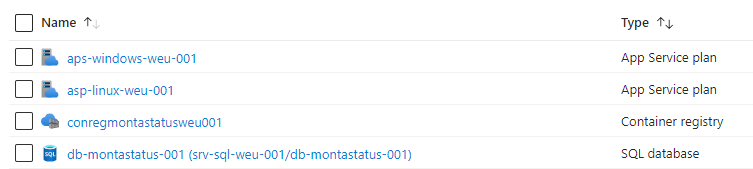
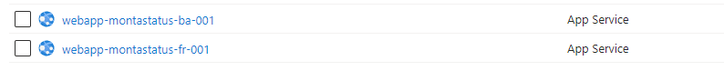
Backend Web App
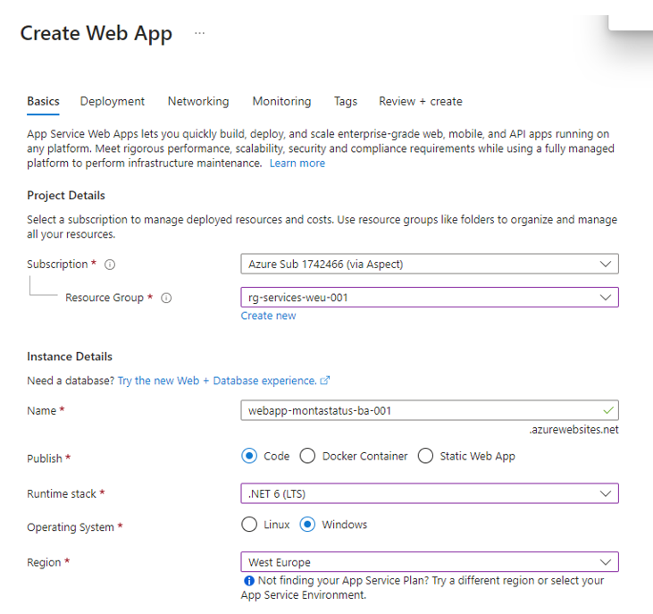
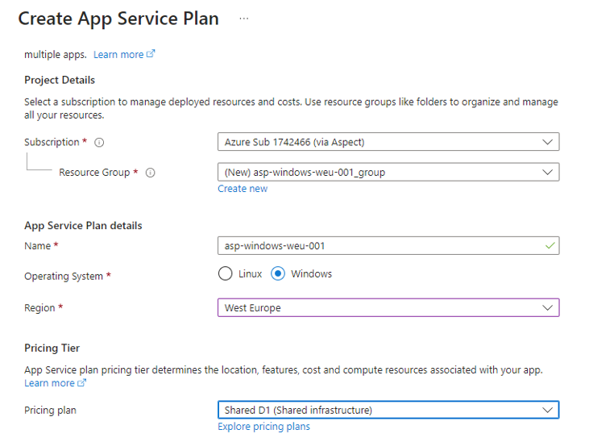
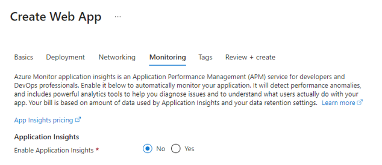
Developers moeten rechten krijgen op de Web app.
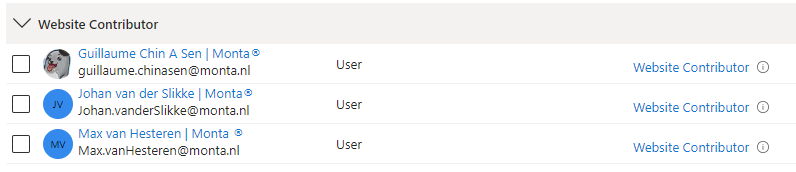
Bij Networking van de SQL-server moet Azure toegang krijgen. Je zou verwachten dat dit werkt via onderstaand vinkje.
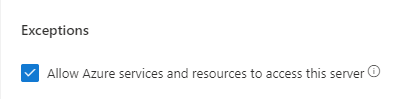
Dat werkte niet meteen en daarom is er een Firewall regel voor de App service toegevoegd. 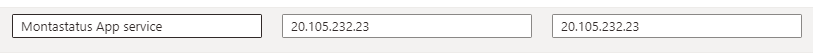
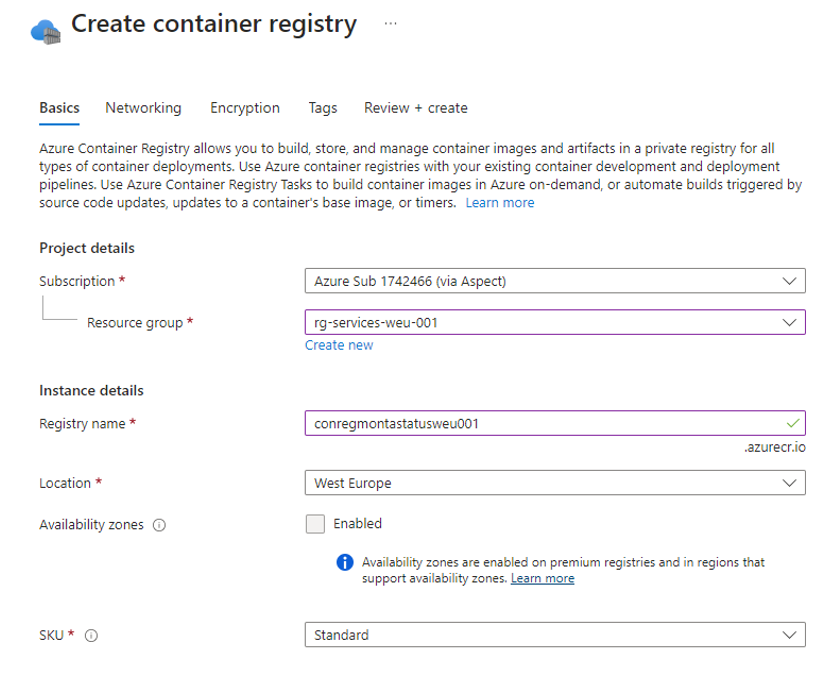
Developers moeten toegang krijgen. 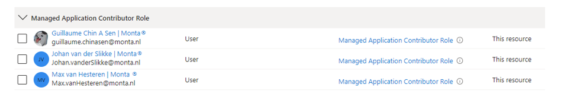
Er is een Access key nodig in de applicatie voor de toegang vanuit Visual code voor de developer. Hiermee kan een image naar de container gepushed worden.
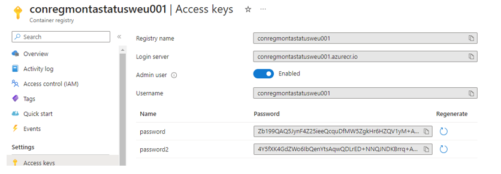
Frontend Web App

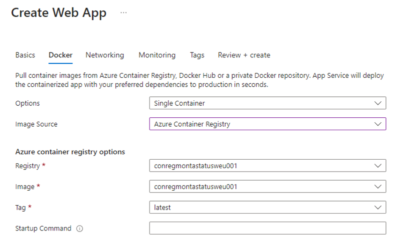
Ook hierop moeten developers rechten krijgen.
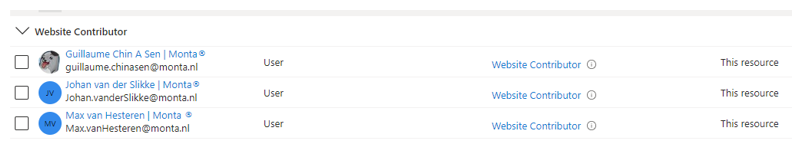
Mailen
Om de applicatie de mogelijkheid te geven om te mailen moeten de Outbound IP-adressen van de Frontend Web app toegevoegd worden bij de whitelist van Mailrelay Montapacking.
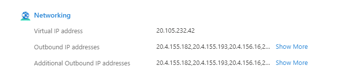
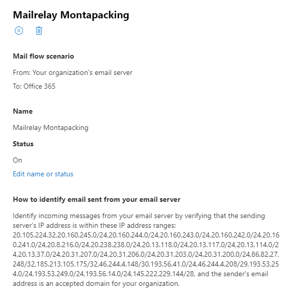
Devops Pipeline
Via devops een release pipeline aanmaken die automatisch een artifact van een build pipeline deployt naar een Azure App Service.
Om dit vanuit devops te kunnen uitvoeren moet je owner zijn van de “Azure Pipeline organisatie” en owner van de “Azure subscription”.
Onderstaande is uitgevoerd in Devops door Jasper Verhaar die owner is gemaakt van de “Azure Pipeline organisatie”.
Zie ook : "https://learn.microsoft.com/en-us/azure/devops/pipelines/library/connect-to-azure?view=azure-devops"
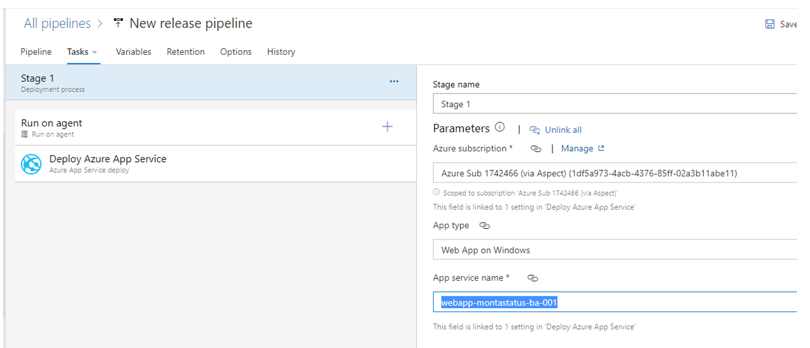
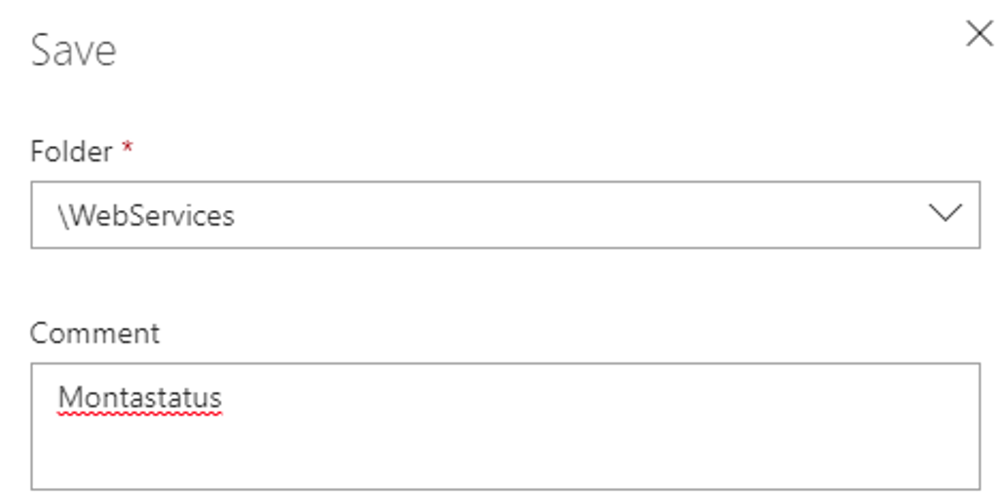
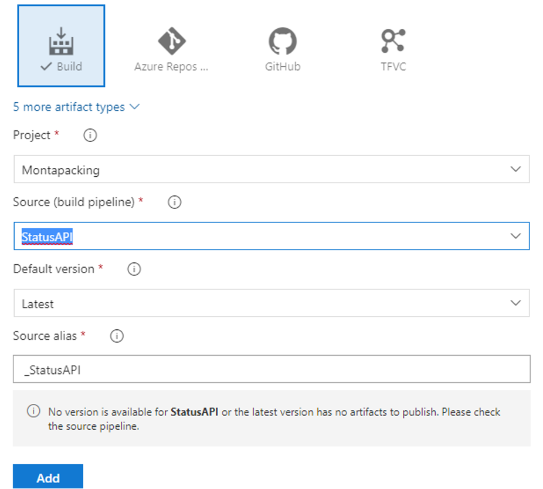
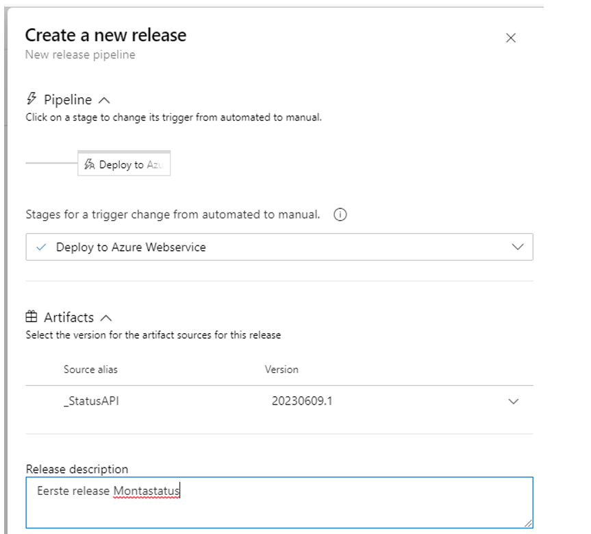
In Azure is er een App registratie aangemaakt op deze dag, waarschijnlijk hoort deze bij de Pipeline.
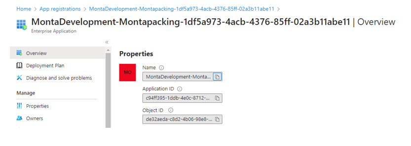
Frontend bereikbaar maken via status.monta.nl
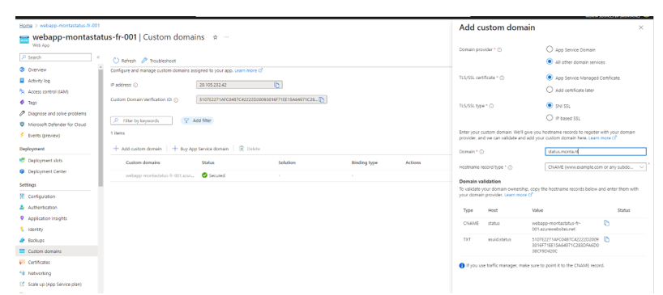
2 entries toevoegen bij Transip en bij de interne DNS.
Status CNAME webapp-montastatus-fr-001.azurewebsites.net. asuid.status TXT 5107E2271AFC04B7C42222D20093016F71EE15A64971C283DFA6D03BCF9D420C